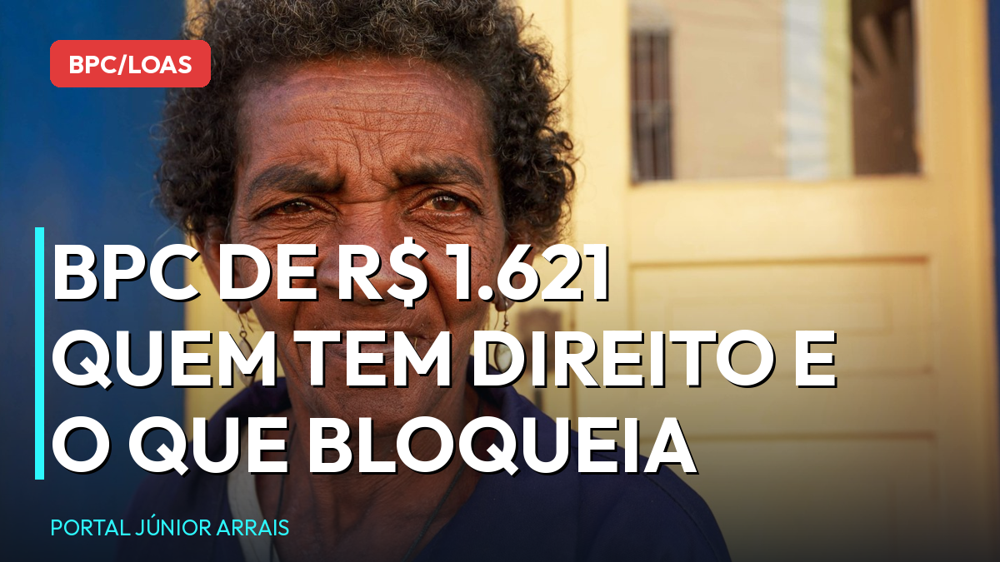

BPC/LOAS: renda de até R$ 405,25 por pessoa e cadastro em dia; o guia de 2026

O BPC — também chamado de LOAS — paga um salário mínimo por mês, hoje R$ 1.621, para idosos a partir de 65 anos e pessoas com deficiência de família de baixa renda. Não é aposentadoria, não exige contribuição ao INSS e, por isso mesmo, tem regras próprias que confundem muita gente. Veja o essencial de 2026.
Foto ilustrativa: retrato de idosa.
Quem tem direito
São dois grupos, previstos na Lei nº 8.742/1993:
- Idoso com 65 anos ou mais;
- Pessoa com deficiência de qualquer idade, cujo impedimento seja de longo prazo — ou seja, com efeitos por pelo menos dois anos — e que dificulte a participação plena na sociedade.
Nos dois casos é preciso comprovar a baixa renda da família.
O critério de renda: R$ 405,25 por pessoa
A regra geral é ter renda de até um quarto do salário mínimo por pessoa que mora na casa. Com o mínimo em R$ 1.621, o limite é de R$ 405,25 por pessoa.
A conta é simples: some tudo o que entra na casa e divida pelo número de pessoas do grupo familiar. Se o resultado for igual ou menor que R$ 405,25, o critério está atendido.
Quem entra no grupo familiar: o requerente, o cônjuge ou companheiro, os pais, os filhos e enteados solteiros, os irmãos solteiros e os menores tutelados — desde que morem sob o mesmo teto. Parente que mora em outra casa não entra na conta.
Deficiência: a avaliação tem duas partes
Este é o ponto que mais surpreende. Para o BPC por deficiência, o INSS faz duas avaliações:
- a avaliação médica, com o perito;
- a avaliação social, com assistente social, que olha como a deficiência afeta a vida diária, o trabalho, o estudo e o convívio.
Faltar a uma delas derruba o pedido. E não adianta comparecer só à médica: a análise é conjunta.
CadÚnico: o motivo mais comum de bloqueio
Estar inscrito no Cadastro Único, com os dados atualizados, é obrigatório — tanto para pedir quanto para continuar recebendo.
A recomendação é atualizar o cadastro a cada dois anos, ou sempre que houver mudança: alguém nasceu, alguém saiu de casa, mudou o endereço, mudou a renda, mudou o telefone. Cadastro desatualizado é a causa número um de bloqueio de BPC — e o beneficiário só descobre quando o dinheiro não cai.
A atualização é feita no CRAS do município, de graça.
O que fazer se o benefício foi bloqueado ou negado
- Consulte o motivo no Meu INSS ou pelo telefone 135;
- se for cadastro, procure o CRAS e regularize;
- se foi negado, existe prazo para recurso administrativo, feito pelo próprio Meu INSS;
- guarde todos os laudos, exames e comprovantes de despesa com saúde — eles pesam na avaliação.
Cuidado com golpe
Desconfie de quem cobrar taxa para pedir, desbloquear ou "adiantar" o BPC, e de qualquer ligação pedindo senha, Pix ou código de mensagem. Ninguém pode garantir aprovação de benefício.
A conta da renda familiar e a avaliação da deficiência têm detalhes que mudam o resultado do pedido. Antes de requerer ou recorrer, procure um profissional de sua confiança para analisar o seu caso.
Conteúdo informativo — não substitui orientação individualizada sobre o seu caso.